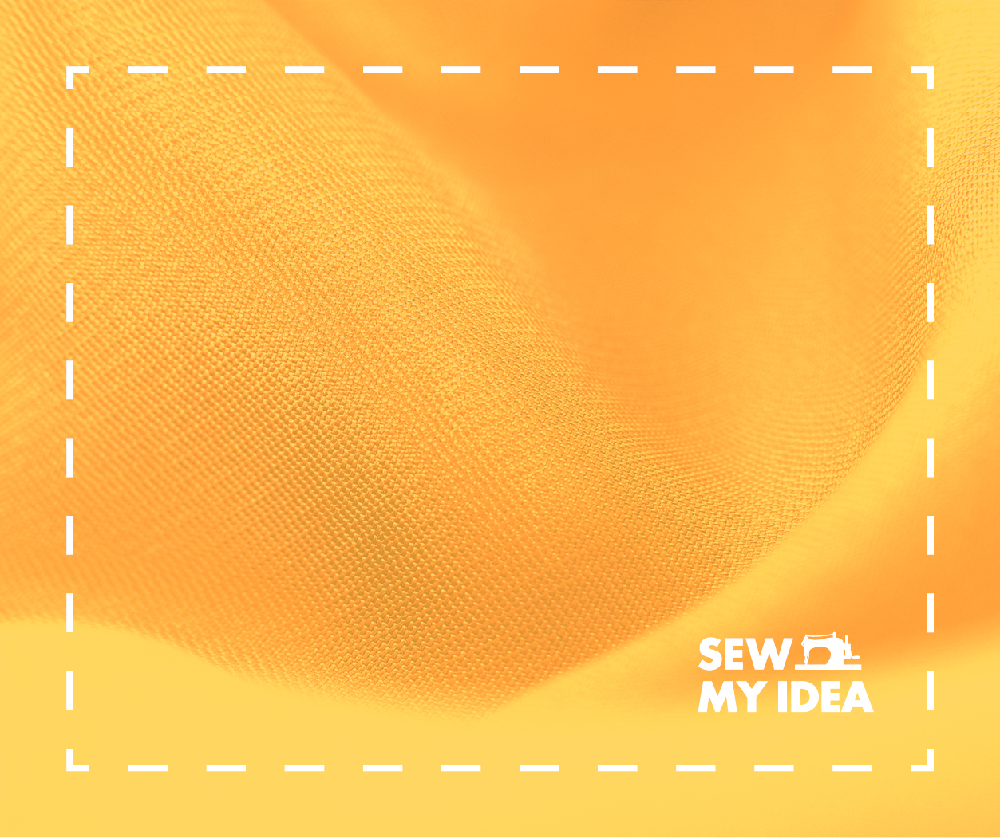
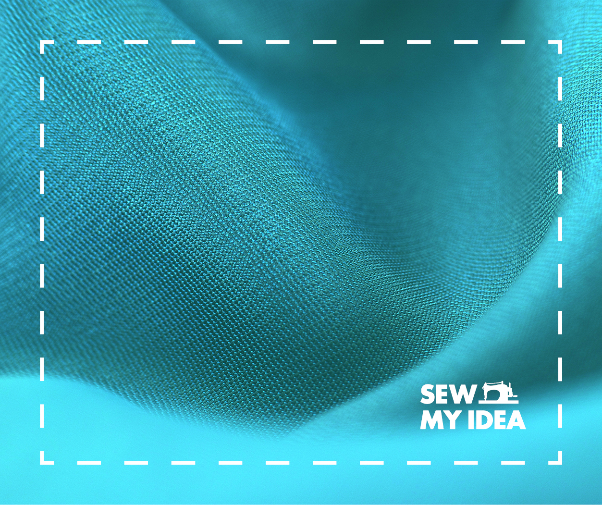

Beginner

Learn to sew with this beginner class that starts with the basics!
This class teaches students how to use a sewing machine and serger
to complete guided projects while learning the fundamentals of sewing.
All equipment and materials are provided. No experience necessary!
Lesson topics: using a sewing machine, fabric types, raw edge finishing,
using a pattern, hemming, serging, interfacing, zippers, and mending.
Projects: sunglasses case, re-useable shopping bag, zippered pencil case.
Thursday’s 7 to 9 PM (Oct 11 – Nov 15)
$170 (includes equipment and supplies)
Capacity: 8 students
Intermediate I

Learn sew much more with this class designed to teach students the
skills needed to complete projects independently! This class builds on the fundamentals
learned in the beginner class to sew pyjama pants and projects of their choice.
The pattern for the pyjama pants is provided, however students are responsible for
supplying fabric and notions.
Basic sewing experience is required.
Lesson topics: using a pattern,
the project process, elastic & drawstring, buttonholes, darts & pleats,
selecting patterns and fabric, working with knit fabric.
Project: pj pants, student selected project.
Tuesday’s 7 to 9 PM (Oct 2 – Nov 6)
$170 (students supply fabric)
Capacity: 6 students
Intermediate II
Learn sew much more about how to finish and fit garments!
This class introduces students to basic clothing pattern adjustments,
alternations, and finishing techniques to complete quality garments.
Experience working with patterns is required.
Lesson topics: neckline & armhole finishes, bodice & sleeve pattern piece
adjustments, fitting a test garment.
Project: student selected projects
Tuesday’s 7 to 9 PM (Nov 13 – Dec 18)
$170 (students supply patterns and fabric)
Capacity: 6 students